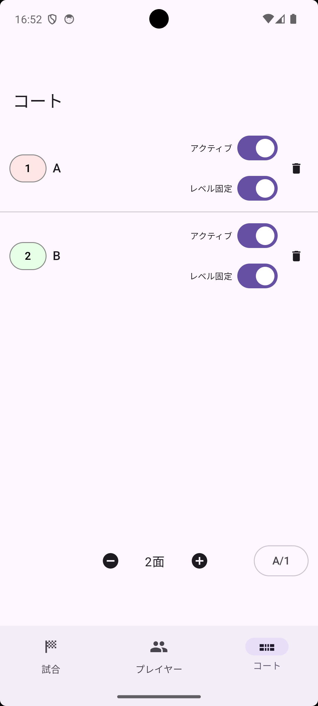

コート タブ下部の ＋ / － ボタンでコートを追加・削除できます。個別に削除する場合は、コート行右端のゴミ箱アイコンをタップしてください。

画面下部の A/1 ボタンをタップすると、コート名をアルファベット（A・B・C…）と数字（1・2・3…）で切り替えられます。
各コートの左端にあるレベルバッジをタップするたびに 1→2→3→1&2→1 と切り替わります。レベル分けの詳しい使い方は「高度な使い方」をご覧ください。
各コートの行の右側に、次の2つの設定がトグルとして直接表示されます。タップして別画面を開く必要はありません。